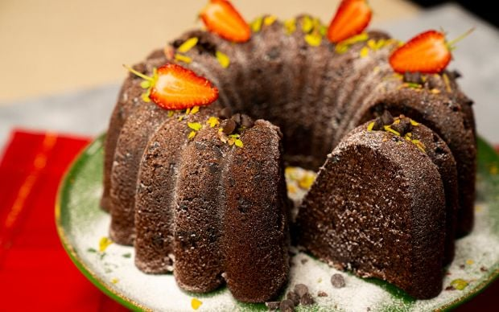

|  | Tabaklarda Ona Yer Açın: Damla Çikolatalı Kakaolu Kek |
| Çikolatanın şu ana kadar en çok yakıştığı lezzetlerden biri olan bu keki sevmeyen olmayacağına çok eminiz! Üstelik yalnızca altın günü, misafir ağırlama gibi kalabalık günlerin vazgeçilmezi olmak zorunda değil; evden çıkmadığınız bir günde, ev halkına yapıp hep beraber çatallara sarılabilir yada sadece kendinizi şımartabilirsiniz. teknolojilerini üretmek için yarışacak. |